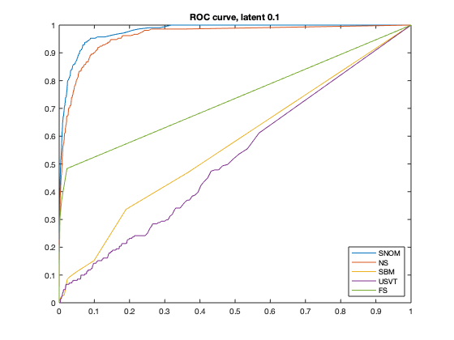

Contents
Binarize the brain network
cd('/Users/qwu/Downloads/Don/Don_network/2017_May30/network/LogReg_modified/neuro');
load('neuro.mat');
bneuro = im2bw(neuro,0.4);
n = size(bneuro,1);
for i=1:n
bneuro(i,i)=0;
end
addpath('/Users/qwu/Downloads/Don/Don_network/2017_May30/network/LogReg_modified/RedCapdata');
W=bneuro;
n=size(W,1);
for i=1:n
W(i,i)=0;
end
connection_true = squareform(W)';
observed_idx = find(connection_true);
connection_revealed = connection_true;
Hide 10% edges
latent_ratio = 0.1;
latent_idx = find(binornd(ones(length(observed_idx),1),latent_ratio));
connection_revealed(observed_idx(latent_idx)) = 0;
SNOM Methods
[omega_0 pi_0 BB pihat_mod]=ergm_modified(connection_revealed);
logmod_decision = pihat_mod>pi_0;
logmod_positive = sum(logmod_decision);
fp_logmod = sum(logmod_decision(connection_true==0)==1);
fn_logmod = sum(logmod_decision(connection_true==1)==0);
tp = sum(logmod_decision(connection_true==1)==1);
Neighborhood Smoothing method by Yuan Zhang
ns = NeighborhoodSmoothing(squareform(double(connection_revealed)));
for i =1:n
ns(i,i)=0;
end
pihat_ns = squareform(ns);
pihat_ns_sort = sort(pihat_ns,'descend');
pi_0ns = max(0.001, pihat_ns_sort(logmod_positive));
ns_decision = pihat_ns>pi_0ns;
fp_ns= sum(ns_decision(connection_true==0)==1);
fn_ns = sum(ns_decision(connection_true==1)==0);
tp_ns = sum(ns_decision(connection_true==1)==1);
Stochastic block model
west = stochastic_block(squareform(double(connection_revealed)),round(log(75)));
for i =1:n
west(i,i)=0;
end
pihat_sbm = squareform(west);
pihat_sbm_sort = sort(pihat_sbm,'descend');
pi_0sbm = max(0.001, pihat_sbm_sort(logmod_positive));
sbm_decision = pihat_sbm>pi_0sbm;
fp_sbm= sum(sbm_decision(connection_true==0)==1);
fn_sbm = sum(sbm_decision(connection_true==1)==0);
tp_sbm = sum(sbm_decision(connection_true==1)==1);
Universal sigular value thresholding method
W = usvt_nquad(squareform(double(connection_revealed)));
for i =1:n
W(i,i)=0;
end
pihat_usvt = squareform(W);
pihat_usvt_sort = sort(pihat_usvt,'descend');
pi_0usvt = max(0.001, pihat_usvt_sort(logmod_positive));
usvt_decision = pihat_usvt>pi_0;
fp_usvt= sum(usvt_decision(connection_true==0)==1);
fn_usvt = sum(usvt_decision(connection_true==1)==0);
tp_usvt = sum(usvt_decision(connection_true==1)==1);
Full sum method by Yunpeng Zhao
A=double(squareform(connection_revealed));
ATrue=double(squareform(connection_true));
W=topoW1(A);
V=ones(size(squareform(connection_true)));
lam=1;
[pihat_fs_m,t]=coordBlockDV(A,W,lam,V);
for i=1:n
pihat_fs_m(i,i)=0;
end
pihat_fs=squareform(pihat_fs_m)';
Plot ROC curves
fpr_mod_list = [];
tpr_mod_list = [];
fpr_ns_list = [];
tpr_ns_list = [];
fpr_sbm_list = [];
tpr_sbm_list = [];
fpr_usvt_list = [];
tpr_usvt_list = [];
fpr_fs_list = [];
tpr_fs_list = [];
prdedge_mod_list = [];
prdedge_ns_list = [];
prdedge_sbm_list = [];
prdedge_usvt_list = [];
prdedge_fs_list = [];
pi_list=[];
for pi_00 = -0.001:0.001:0.999
pi_list = [pi_list pi_00];
logmod_decision1 = pihat_mod>pi_00;
tpr_mod_list=[tpr_mod_list sum(logmod_decision1(observed_idx(latent_idx)))/sum(connection_true(observed_idx(latent_idx)))];
fpr_mod_list=[fpr_mod_list sum(logmod_decision1(connection_true==0)==1)/sum(connection_true==0)];
prdedge_mod_list=[prdedge_mod_list sum(logmod_decision1)];
ns_decision1 = pihat_ns>pi_00;
tpr_ns_list=[tpr_ns_list sum(ns_decision1(observed_idx(latent_idx)))/sum(connection_true(observed_idx(latent_idx)))];
fpr_ns_list=[fpr_ns_list sum(ns_decision1(connection_true==0)==1)/sum(connection_true==0)];
prdedge_ns_list=[prdedge_ns_list sum(ns_decision1)];
sbm_decision1 = pihat_sbm>pi_00;
tpr_sbm_list=[tpr_sbm_list sum(sbm_decision1(observed_idx(latent_idx)))/sum(connection_true(observed_idx(latent_idx)))];
fpr_sbm_list=[fpr_sbm_list sum(sbm_decision1(connection_true==0)==1)/sum(connection_true==0)];
prdedge_sbm_list=[prdedge_sbm_list sum(sbm_decision1)];
usvt_decision1 = pihat_usvt>pi_00;
tpr_usvt_list=[tpr_usvt_list sum(usvt_decision1(observed_idx(latent_idx)))/sum(connection_true(observed_idx(latent_idx)))];
fpr_usvt_list=[fpr_usvt_list sum(usvt_decision1(connection_true==0)==1)/sum(connection_true==0)];
prdedge_usvt_list=[prdedge_usvt_list sum(usvt_decision1)];
fs_decision1 = pihat_fs>pi_00;
tpr_fs_list=[tpr_fs_list sum(fs_decision1(observed_idx(latent_idx)))/sum(connection_true(observed_idx(latent_idx)))];
fpr_fs_list=[fpr_fs_list sum(fs_decision1(connection_true==0)==1)/sum(connection_true==0)];
prdedge_fs_list=[prdedge_fs_list sum(fs_decision1)];
end
figure;plot(fpr_mod_list,tpr_mod_list);
hold on;
plot(fpr_ns_list,tpr_ns_list);hold on;
plot(fpr_sbm_list,tpr_sbm_list);hold on;
plot(fpr_usvt_list,tpr_usvt_list);hold on;
plot(fpr_fs_list,tpr_fs_list);
legend('SNOM','NS','SBM','USVT','FS','Location','southeast');
title('ROC curve, latent 0.1' )

Calculate AUC values
m=length(fpr_mod_list);
auc_mod = -sum((fpr_mod_list(2:m)-fpr_mod_list(1:m-1)).*(tpr_mod_list(1:m-1)+tpr_mod_list(2:m))/2);
auc_ns = -sum((fpr_ns_list(2:m)-fpr_ns_list(1:m-1)).*(tpr_ns_list(1:m-1)+tpr_ns_list(2:m))/2);
auc_sbm = -sum((fpr_sbm_list(2:m)-fpr_sbm_list(1:m-1)).*(tpr_sbm_list(1:m-1)+tpr_sbm_list(2:m))/2);
auc_usvt = -sum((fpr_usvt_list(2:m)-fpr_usvt_list(1:m-1)).*(tpr_usvt_list(1:m-1)+tpr_usvt_list(2:m))/2);
auc_fs = -sum((fpr_fs_list(2:m)-fpr_fs_list(1:m-1)).*(tpr_fs_list(1:m-1)+tpr_fs_list(2:m))/2);
[auc_mod auc_ns auc_sbm auc_usvt auc_fs]
ans =
0.9785 0.9616 0.5688 0.5216 0.7338